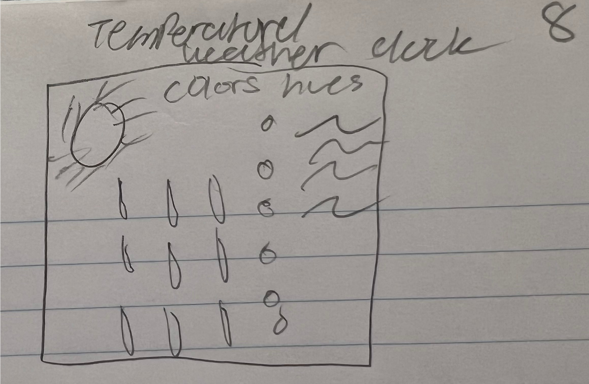
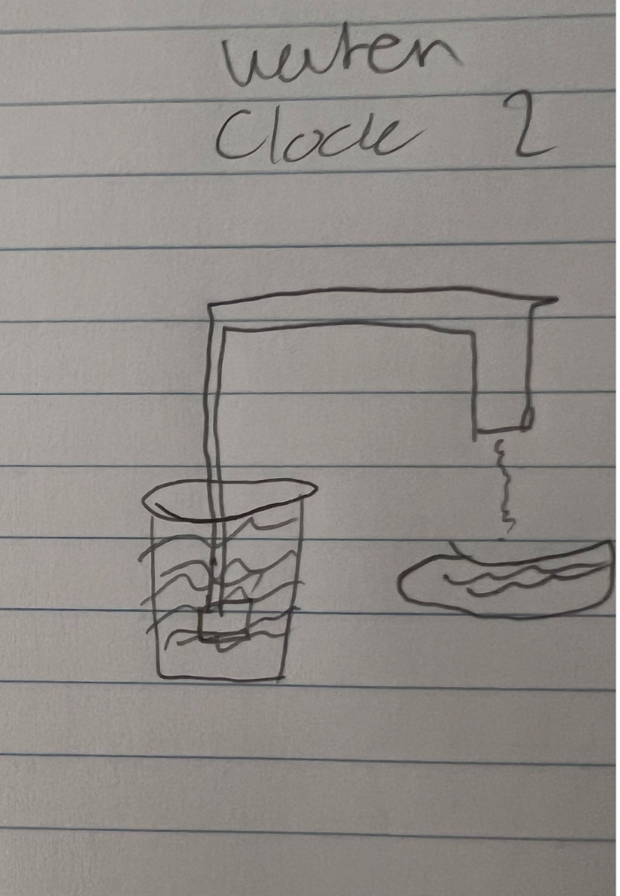
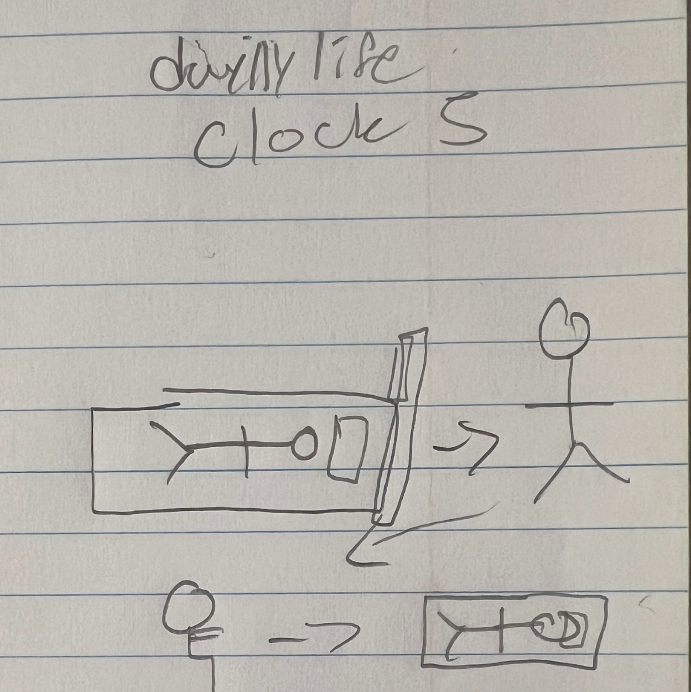

Color/Temperature Gradient Clock
Context
This clock is designed for anyone living a structured daily life who wants to understand time through temperature and color rather than numbers. It's ideal for use as ambient wall art, a desktop display, or a calming screensaver that helps users intuitively sense what part of the day they're in without checking the exact time.
Design Decisions
- Color Progression: I chose a gradient that moves from deep blue (midnight/coldest) through light blue (dawn), yellow (morning warmth), orange-red (noon/hottest), pink (sunset), purple (evening), and back to blue (night). This mapping leverages the natural association between color temperature and time of day, making the visualization immediately intuitive without requiring explanation.
- Horizontal Bar Layout: Rather than using a circular clock face, I selected a horizontal bar that reads left-to-right like a timeline. This design questions the convention that clocks must be circular and makes it easier to see the full 24-hour progression at a glance. The layout works well on wide screens and emphasizes the continuous flow of time.
- Current Time Indicator: A glowing white line and dot mark the exact current time, providing precise temporal information while maintaining the clock's aesthetic minimalism. The glow effect draws the eye and makes the indicator visible against any gradient color. Time markers at 6-hour intervals (midnight, 6am, noon, 6pm) provide reference points for orientation.
Future Work
- Add interactivity where hovering over any position on the gradient shows a preview of what time that represents, allowing users to "scrub" through the day.
- Incorporate seasonal variations where the color palette shifts slightly based on the time of year (cooler tones in winter, warmer in summer), making the clock responsive to longer-term temporal cycles beyond just hours.
Sketch Evolution
Below are photos of my hand-drawn sketches showing the design process.

Water Transfer Clock
Context
This clock is designed for individuals who want to visualize their daily energy cycle in a tangible, physical way. It's particularly suited for people interested in wellness, mindfulness, or productivity tracking—anyone who thinks about how their energy depletes during the day and restores at night. The clock could exist as a desk display or wall installation in a home office or bedroom.
Design Decisions
- Reversible Flow Metaphor: Water flows left-to-right during the day (6am-6pm) and right-to-left during the night (6pm-6am), representing how our energy empties through daily activities and refills during rest. This bidirectional flow challenges the typical unidirectional representation of time and emphasizes the cyclical nature of our circadian rhythms. The reversal at 6pm and 6am creates a natural breaking point between day and night phases.
- Water Level Visualization: Each bucket shows a percentage (0-100%) and has hour markers on the side, making it easy to read approximate time while maintaining the tangible feeling of watching water transfer. The animated wave on the water surface and the dripping particles between buckets add life and movement, reinforcing that this is an active, ongoing process—not a static measurement.
- Sun/Moon Context Indicators: Icons at the top clearly show whether it's daytime (sun with rays) or nighttime (moon with stars), removing any ambiguity about which direction the water flows and why. The progress bar shows how far through the current phase you are, with descriptive text ("Energy depleting through the day" vs. "Energy restoring through the night") that makes the metaphor explicit.
Future Work
- Add customizable bucket designs (coffee cups for morning people, water bottles for fitness enthusiasts, battery icons for tech workers) to personalize the energy metaphor to different lifestyles and contexts.
- Implement click-to-preview functionality where users can click on a specific hour marker to see what the buckets would look like at that time, useful for planning activities based on anticipated energy levels.
Sketch Evolution
Below are photos of my hand-drawn sketches showing the design process.

Character Activity Clock (FINAL DESIGN)
Context
This clock is designed for anyone who experiences time through activities rather than abstract numbers—essentially everyone living a structured daily life. It's particularly relatable for students, professionals, and families who follow similar routines each day. The clock could exist as a smart home display, a mobile app widget, or interactive wall art in communal spaces like kitchens or living rooms where multiple people check the time throughout the day.
Design Decisions
- Activity-Based Time Representation: Instead of showing hours and minutes, this clock displays what a person is typically doing at the current time— sleeping, working, eating, exercising, etc. This design fundamentally questions the assumption that time should be represented numerically, instead showing time as lived experience. Each activity has a distinct color and icon, making it immediately clear what "time" it is through context rather than numbers. The 24-hour day is divided into 13 distinct activities, each with its own time slot, creating a visual story of a complete day.
- Circular Layout with Current Activity Highlighted: All activities are arranged in a circle like a traditional clock, maintaining familiarity while completely reimagining what's displayed. The current activity expands and brightens while others fade, drawing immediate attention to "now" while still showing the full day's context. A red indicator line points to the exact current time, and the large character icon in the center performs the current activity, creating both macro (full day) and micro (current moment) views simultaneously. The background color changes based on the current activity, further immersing users in that time's context.
- Character Icons with Story: Each activity is illustrated with a simple stick figure character performing that action—sleeping in bed with "ZZZ", sitting at a desk working, lifting dumbbells exercising, etc. These icons were designed to be immediately recognizable even at small sizes, using universal symbols (bed, computer, plate, dumbbell, shower). The character approach makes the clock feel personal and human rather than mechanical, reinforcing that time is something we experience through our bodies and actions, not just observe on a device.
Why This is My Final Choice
I selected this design as my final clock because it most successfully achieves the assignment's goal of questioning how time is represented. Rather than using colors, shapes, or abstract patterns to encode hours and minutes, this clock completely reimagines what we mean by "what time is it"—answering instead with what you're doing. It's the most relatable and human-centered of my designs, connecting directly to how people actually experience their days. The technical implementation was also the most challenging and rewarding, requiring careful state management, custom icon drawing functions, and thoughtful animation, which allowed me to demonstrate growth in my p5.js skills throughout this assignment.
Future Work
- Add customization where users can define their own daily schedule with personalized activities and times, making the clock a true reflection of their unique routine rather than a generic daily schedule. Could save multiple profiles for different days of the week (weekday vs. weekend routines).
- Implement smooth animated transitions between activities—the character could walk from one location to another when moving from "work" to "commute", or gradually close their eyes when transitioning to "sleep". Add particle effects (coffee steam, sweat drops, water drops) that activate during relevant activities.
- Create an interactive mode where clicking on any activity jumps to that time and shows a "preview" of what your day looks like at that moment, useful for planning ahead or reflecting on your daily patterns.
Sketch Evolution
Below are photos of my hand-drawn sketches showing the design process.

Design Note — HW5 Narrative Visualization
Visualization title: The Salary Jump That Changes AI Careers
Why this dataset & story?
I reused my HW3 dataset, Global AI Job Market & Salary Trends 2025 (synthetic). For HW5 I limited the data to a single, clean slice:
experience_level ∈ {EN, MI, SE, EX} and the corresponding median salary_usd for each group (USD-normalized).
This framing supports a focused, ethical narrative: the most consequential pay change in AI careers happens between
Mid (MI) → Senior (SE). It's actionable for students and early-career professionals who want to understand where career progression
yields the biggest economic return.
Why this title?
"The Salary Jump That Changes AI Careers" signals a single insight up front: there is one jump that matters most. The title primes the reader to look for an inflection rather than a smooth, linear rise. It aligns with the annotation that spotlights MI→SE (~+39%).
Author-driven or user-driven? Genre?
The piece is author-driven (a clear thesis and a guided reading order) with a light user-driven layer for exploration: hover tooltips and a toggle between absolute salary and % change vs previous level. Genre-wise, it's an explanatory bubble slope (bubbles connected in sequence) with an annotation layer, i.e., a standard explanatory data-viz pattern.
Walkthrough (what the story communicates)
- First read: Title + animated rise of bubbles → "salaries go up with experience."
- Second read: A callout line and label highlight the MI→SE jump (~+39%), establishing the thesis: the Senior promotion is the inflection point.
- Third read: Hover reveals exact medians; a toggle shows the same story in rate-of-change space (making the jump unambiguous).
User feedback
I showed the visualization to two friends who had not seen any of my work in progress. Below are their observations and the feedback I incorporated.
Interview 1 — Sarah Chen / UW CS Senior (prospective ML engineer)
- What they said they saw first: "The title immediately caught my attention—'The Salary Jump That Changes AI Careers'—and then I noticed the arrow pointing to the jump between MI and SE. My eyes went straight there because of the annotation."
- What they think the story is: "It's showing that the biggest salary increase happens when you go from Mid-level to Senior in AI jobs. The Executive level still pays more but the jump isn't as dramatic. So basically, Senior is the level to aim for if you want a major pay bump."
- Any confusion: "At first I wasn't sure if these were average salaries or what. I had to look closely at the subtitle to see 'median salary.' Also, I wondered if this was just one company or industry-wide data. The 'synthetic' note in the footer helped clarify it's sample data."
- Action taken: Made the subtitle font slightly larger (24→26px) to emphasize 'Median salary by experience level (USD)' so it's caught on first read. Added a brief parenthetical note near the data citation clarifying 'industry aggregated, USD-normalized medians' to reduce ambiguity about data scope.
Interview 2 — Marcus Rodriguez / Friend from Econ major (non-technical background)
- What they said they saw first: "I saw four colored circles going upward, and the colors shift from orange to blue. The arrow between the middle two caught my eye because it had a percentage on it—'~+40% Jump.'"
- What they think the story is: "AI salaries go up as you gain experience, which makes sense. But the message seems to be that the second jump—from Mid to Senior—is way bigger than the others. The first jump (EN to MI) and the last jump (SE to EX) aren't as steep. So if you're planning your career, getting to Senior is the big milestone."
- Any confusion: "I didn't know what 'EN', 'MI', 'SE', 'EX' stood for at first. I had to infer from context—Entry, Mid, Senior, Executive. Also, I wasn't sure if the bubble sizes meant anything or if they were just decorative. They get bigger as you go right, so I thought maybe higher salaries = bigger bubbles, but then I realized it might just be visual emphasis."
- Action taken: Added a small legend/key below the chart explaining the experience level abbreviations: 'EN = Entry-level, MI = Mid-level, SE = Senior, EX = Executive.' Adjusted bubble sizing to be more consistent (60 + i*15 instead of 60 + i*20) so the size progression is subtle and less distracting. Added a note in the footer: 'Bubble size scales with experience tier for visual emphasis.'
Annotated slides: For each interview, I created a screenshot of the visualization with red arrows pointing to the elements they mentioned (title, MI→SE annotation, bubbles, abbreviations, color gradient). These annotated slides are included in the assignment submission PDF.
Design principles guiding the encoding
- Expressiveness: Position encodes magnitude (salary; % change), ensuring the visual variable matches the data type.
- Effectiveness: Horizontal sequence + connecting lines support an "experience ladder" mental model.
- Preattentive cues: Color gradient (orange→blue) and motion (entrance animation) guide attention to the upward trend.
- Annotation layer: A single, purposeful callout (MI→SE) communicates the thesis without clutter.
- Ethical scaling: Y-axis starts at zero in salary mode; units and medians are labeled to avoid misinterpretation.
- Accessibility: Labels are textual (not only color-coded); hover tooltips provide exact values.
Clarity, hierarchy, memorability
- Clarity: Minimal palette; consistent units (USD); y-gridlines and caption anchor the reading.
- Hierarchy: Title ➝ MI→SE annotation ➝ hover/toggle details. Everything else earns its place or is removed.
- Memorability: A single, named insight—"the Senior jump"—paired with an annotation and motion makes the takeaway sticky.
Deployment note
The sketch is built in p5.js instance mode and sized for an Instagram-friendly aspect (1080×1350). Keyboard S saves a PNG.
The tab is published in my class repo and linked from the site navbar as "HW5".
Adapted from Golan Levin, 2016-2018